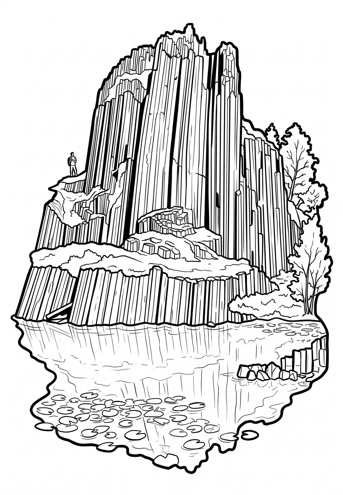

Panské skály
Liberecký kraj · 595 m n. m.

přírodní památka · #046
Panská skála nebo též Varhany je čedičová skála s výraznou sloupcovitou odlučností, chráněná jako národní přírodní památka, která se nachází na území města Kamenického Šenova v okrese Česká Lípa v Libereckém kraji. Chráněné území je v péči AOPK ČR, regionálního pracoviště Správa Chráněné krajinné oblasti České středohoří.